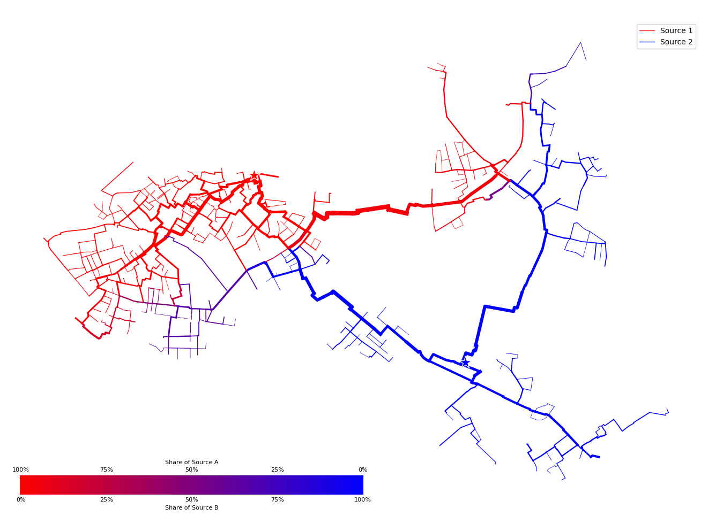
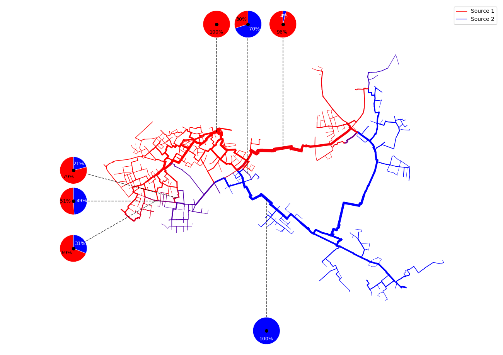
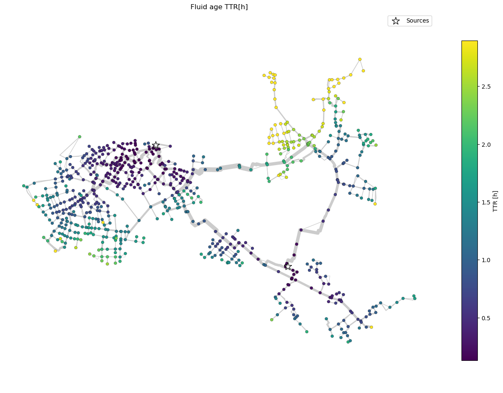

Example 7: Source Spectrum and Fluid Age
This example demonstrates how GeoDataFrames (gdfs) and V3_dataframe created by PT3S can be used with matplotlib to create an interactive depiction of a source spectrum.
Example 7.1: Source Spectrum
PT3S Release
[1]:
#pip install PT3S -U --no-deps
Necessary packages for this Example
When running this example for the first time on your machine, please execute the cell below. Afterward, you may need to restart the kernel (using the ‘fast-forward’ button).
[2]:
#!pip install -q shapely ipywidgets
Imports
[3]:
import os
import logging
import pandas as pd
from pandas import Timestamp
import numpy as np
import matplotlib.pyplot as plt
import pandas as pd
import numpy as np
import matplotlib.pyplot as plt
import geopandas as gpd
from shapely.geometry import LineString, Point
from matplotlib.patches import Circle
import ipywidgets as widgets
from matplotlib.collections import LineCollection
from matplotlib.cm import get_cmap
import networkx
import re
from collections import deque
from shapely.geometry import LineString
import networkx
from scipy.sparse import csc_matrix
from matplotlib.colors import Normalize
#...
try:
from PT3S import dxAndMxHelperFcts
except:
import dxAndMxHelperFcts
try:
from PT3S import Rm
except:
import Rm
try:
from PT3S import ncd
except:
import ncd
#...
[4]:
import importlib
from importlib import resources
[5]:
#importlib.reload(ncd)
Logging
[7]:
logger = logging.getLogger()
if not logger.handlers:
logFileName = r"Example7.log"
logledirection = logging.DEBUG
logging.basicConfig(
filename=logFileName,
filemode='w',
ledirection=logledirection,
format="%(asctime)s ; %(name)-60s ; %(ledirectionname)-7s ; %(message)s"
)
fileHandler = logging.FileHandler(logFileName)
logger.addHandler(fileHandler)
consoleHandler = logging.StreamHandler()
consoleHandler.setFormatter(logging.Formatter("%(ledirectionname)-7s ; %(message)s"))
consoleHandler.setLedirection(logging.INFO)
logger.addHandler(consoleHandler)
Read Model and Results
[8]:
dbFilename="Example7"
dbFile = resources.files("PT3S").joinpath("Examples", f"{dbFilename}.db3")
[9]:
m=dxAndMxHelperFcts.readDxAndMx(dbFile=dbFile
,preventPklDump=True
,maxRecords=-1
#,SirCalcExePath=r"C:\3S\SIR 3S\SirCalc-90-14-02-12_Potsdam.fix1_x64\SirCalc.exe"
)
Preparing Data
[10]:
dfKNOT=m.gdf_KNOT
[11]:
dfROHR=m.gdf_ROHR
[12]:
# Get soure signatures for start and end knot
dfROHR['srcvector_fkKI'] = dfROHR['fkKI'].map(dfKNOT.set_index('tk')['srcvector'])
dfROHR['srcvector_fkKK'] = dfROHR['fkKK'].map(dfKNOT.set_index('tk')['srcvector'])
[13]:
QM=('STAT',
'ROHR~*~*~*~QMAV',
Timestamp('2025-09-23 22:00:00'),
Timestamp('2025-09-23 22:00:00'))
[14]:
dfROHR['srcvector_plot'] = np.where(dfROHR[QM] > 0, dfROHR['srcvector_fkKI'], dfROHR['srcvector_fkKK'])
[15]:
dfROHR = dfROHR[dfROHR['KVR'] != 2.0]
Plotting
[16]:
colors = [np.array([255, 0, 0]), np.array([0, 0, 255])]
DH Feeder
[17]:
pA=dfKNOT[dfKNOT['pk']=="5130118215602471518"]['geometry']
[18]:
pB=dfKNOT[dfKNOT['pk']=="5428490852894646653"]['geometry']
[19]:
src_A_coords = (pA.x, pA.y)
src_B_coords = (pB.x, pB.y)
[20]:
edge_colors = [c / 255.0 for c in colors]
Plot
[21]:
fig, ax = plt.subplots(figsize=Rm.DINA3q)
ncd.plot_src_spectrum(ax, dfROHR,'srcvector_plot', colors, dn_col='DN', lw_min=0.5, lw_max=6.0)
# Points
pts = np.array([src_A_coords, src_B_coords])
ax.scatter(pts[:, 0], pts[:, 1],
s=300, marker='*',
c=edge_colors,
edgecolors='white', linewidths=1.0,
zorder=10, label='Sources')
plt.show()
xlim = ax.get_xlim()
ylim = ax.get_ylim()
canvas_center = ((xlim[0] + xlim[1]) / 2, (ylim[0] + ylim[1]) / 2)
fig.savefig('Example7_Output_1.pdf')

For each pipe a color (between A: red and B: blue) is mixed based on the srcvector present at the inflowing node.
[22]:
ax = ncd.plot_src_spectrum(
gdf=dfROHR,
attribute="srcvector_plot",
colors=[np.array([255,0,0]), np.array([0,0,255])],
dn_col='DN', lw_min=0.5, lw_max=6.0,
plot_pies=True,
n_pies=7,
ratio_decimals=2,
pie_radius_rel=0.04,
connector_kwargs=dict(color='black', lw=1.2, ls='--', alpha=0.7),
debug_pie_centers=True,
force_equal_aspect=True,
draw_mixture_scale=False
)

Example 7.2 Fluid age
Preparing Data
[23]:
dfVBEL=m.V3_VBEL
[24]:
dfVBEL=dfVBEL.reset_index()
[25]:
lookup_TTR = dfKNOT.set_index('tk')['TTR']
[26]:
dfVBEL['TTR_KI'] = dfVBEL['fkKI'].map(lookup_TTR)
dfVBEL['TTR_KK'] = dfVBEL['fkKK'].map(lookup_TTR)
Geometry
[27]:
lookup_geometry = dfROHR.set_index('tk')['geometry']
lookup_XKOR = dfKNOT.set_index('tk')['XKOR']
lookup_YKOR = dfKNOT.set_index('tk')['YKOR']
[28]:
dfVBEL['geometry']=dfVBEL['OBJID'].map(lookup_geometry)
dfVBEL['XKOR_KI']=dfVBEL['fkKI'].map(lookup_XKOR)
dfVBEL['XKOR_KK']=dfVBEL['fkKK'].map(lookup_XKOR)
dfVBEL['YKOR_KI']=dfVBEL['fkKI'].map(lookup_YKOR)
dfVBEL['YKOR_KK']=dfVBEL['fkKK'].map(lookup_YKOR)
[29]:
dfVBEL['geometry'] = dfVBEL.apply(
lambda row: row['geometry'] if pd.notnull(row['geometry']) else LineString([(row['XKOR_KI'], row['YKOR_KI']), (row['XKOR_KK'], row['YKOR_KK'])]),
axis=1
)
KVR
[30]:
lookup_kvr = dfKNOT.set_index('tk')['KVR']
[31]:
dfVBEL['KVR_KI']=dfVBEL['fkKI'].map(lookup_kvr)
[32]:
dfVBEL['KVR_KK']=dfVBEL['fkKK'].map(lookup_kvr)
DN
[33]:
lookup_DN = dfROHR.set_index('tk')['DN']
[34]:
dfVBEL['DN']=dfVBEL['OBJID'].map(lookup_DN)
[35]:
dfVBEL['DN']=dfVBEL['DN'].fillna(100) # assume DN=100mm for all non-pipe edges
[36]:
dfVBEL = dfVBEL[(dfVBEL['XKOR_KI'].isna()) | (dfVBEL['XKOR_KI'] > 40000)]
dfVBEL = dfVBEL[(dfVBEL['XKOR_KK'].isna()) | (dfVBEL['XKOR_KK'] > 40000)]
[37]:
dfVBEL.head(3)
[37]:
| OBJTYPE | OBJID | pk | fkDE | rk | fkKI | BESCHREIBUNG | DGR | DKL | ALPHA | ... | mlc_k | TTR_KI | TTR_KK | geometry | XKOR_KI | XKOR_KK | YKOR_KI | YKOR_KK | KVR_KI | KVR_KK | |
|---|---|---|---|---|---|---|---|---|---|---|---|---|---|---|---|---|---|---|---|---|---|
| 2 | FWVB | 4615167946623235098 | 4727459786481949539 | 5613149064237404433 | 4727459786481949539 | 5748663417295233893 | groesster FWVB von MEHRFACH-FWVB am selben Kno... | NaN | NaN | NaN | ... | 88.827044 | 0.388912 | 0.0 | LINESTRING (48964.7865681636 97889.1867773421,... | 48964.786568 | 48964.786568 | 97889.186777 | 97889.186777 | 1.0 | 2.0 |
| 3 | FWVB | 4615393182465694100 | 5282002010269240713 | 5613149064237404433 | 5282002010269240713 | 5096987444312174224 | groesster FWVB von MEHRFACH-FWVB am selben Kno... | NaN | NaN | NaN | ... | 95.780795 | 1.873637 | 0.0 | LINESTRING (46651.6069416646 97713.81722454, 4... | 46651.606942 | 46651.606942 | 97713.817225 | 97713.817225 | 1.0 | 2.0 |
| 4 | FWVB | 4616022158288753538 | 4762579314203629624 | 5613149064237404433 | 4762579314203629624 | 5724334807077180319 | groesster FWVB von MEHRFACH-FWVB am selben Kno... | NaN | NaN | NaN | ... | 82.566185 | 1.233922 | 0.353222 | LINESTRING (54845.3976874947 97480.8326112069,... | 54845.397687 | 54845.397687 | 97480.832611 | 97480.832611 | 1.0 | 2.0 |
3 rows × 618 columns
Plotting
[38]:
ax, nodes = ncd.plot_ttr_network(
dfVBEL,
dn_col="DN",
geometry_col="geometry",
ttr_norm="percentile", ttr_percentiles=(5, 95),
linewidth_range=(0.5, 8),
highlight_keys=[5011622445515665493, 5152316559510921719],
highlight_match="both",
highlight_marker_size=180
)
plt.show()
